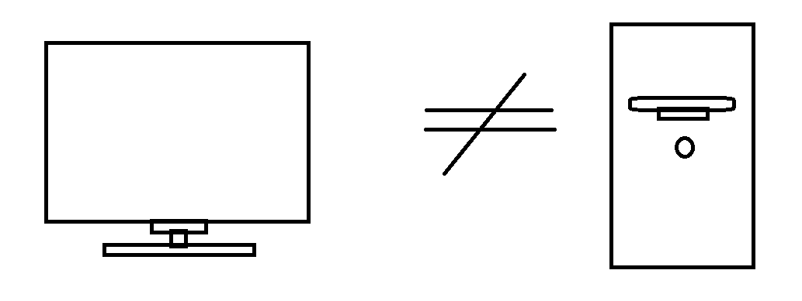

Say Hello To a New World
If you're seeking a place to learn more about your computer and ultimately to control it from a basic to a deep level, then this is the place for you. Don't worry if you're a newbie when it comes to computers or if you're very seasoned, this webpage can help you grow your understanding!
This website will organize information about computer concepts into two separate paths. The first starts at a basic level and has lots of detail. The second starts at an advanced level and is more to-the-point. In the title you will see modules organzed starting with a letter such as "B". This tells you that this is a module constructed at a basic level. If you're a newbie, these are great. If you see the label similar to "E" it means that this is a module constructed at a more experienced level.
At the current time, the website has content that covers basics to the X86 Assembly Language and will start you off with learning about the CPU, AKA the brain of your computer. Feel assured however that more content will be coming in as time goes by!
Table of Contents

Back in 2020, I started getting into computer architecture after finding that your computer monitor is not the same thing as your computer itself - I was clueless when it came to computers - My journey with learning was all self-taught which meant visiting websites like, well, this one you are at right now! The main struggle however is I found it very hard to grasp since most often the resources I found were not well organized, started you off at an 'intermediate' or 'advanced' level without explaining the fundamentals. With this said, this website focuses on giving any individual the ability to start learning at a very basic to an advanced level so that you can grow in understanding no matter where you are at!
Without further adieu, let your journey begin!
About Us
Thank you for visiting our website! There's a few resources /
institutions we want to recognize that assisted in the creation of
this website along with some details behind why / how this page was
made.
Much of my understanding of x86 Assembly came from the resources by
the
Indian Institute of Technology Delhi
IITD and specifically the
following book
Computer Organisation and Architecture
Lastly I would like to thank ChatGPT for generating some of the images that populate this website - don't worry, that was it. Everything else here is hand typed by a human - me :)